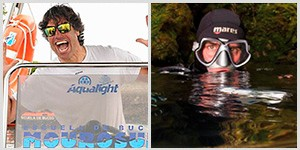
DIRECCIÓN
Leo del Rincón
Instructor Trainer SSI / ESA / FEDAS / CMAS, Instructor de Buceo Técnico SSI XR, Técnico Deportivo y Patrón de embarcación.

Instructor Trainer SSI / ESA / FEDAS / CMAS, Instructor de Buceo Técnico SSI XR, Técnico Deportivo y Patrón de embarcación.
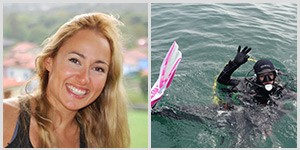
Master Instructor SSI, Instructora ESA / CMAS / DAN, Técnica Deportiva y Patrona de embarcación.
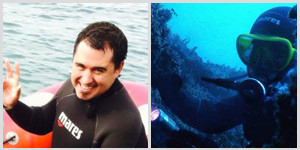
Instructor SSI / ESA / CMAS, Patrón de embarcación y Técnico Deportivo.
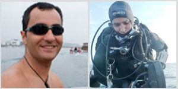
Instructor SSI / ESA / CMAS / DAN, Patrón de embarcación y Técnico Deportivo.
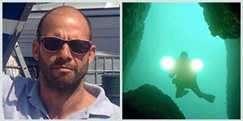
Instructor SSI Freediving, Patrón de embarcación y Técnico Deportivo.
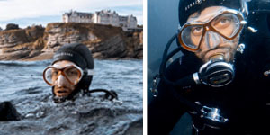
Instructor especializado en formación recreativa y acompañamiento de actividades subacuáticas para todos los niveles.
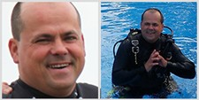
Instructor con experiencia en actividades subacuáticas, seguridad y formación de nuevos buceadores.
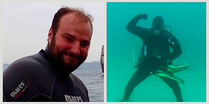
Instructor SSI / DAN, Técnico en reparación y mantenimiento de equipos y Patrón de embarcación.
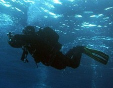
Especializado en mantenimiento técnico, en actividades marítimas.
Gestión administrativa, coordinación de reservas y atención personalizada a clientes y alumnos.
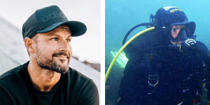
Especializado en apoyo técnico, organización de actividades y logística marítima.
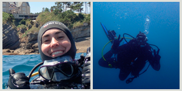
Participa en coordinación de actividades, atención a alumnos y experiencias relacionadas con el entorno marino.
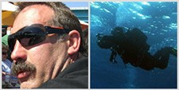
Apoyo en organización, mantenimiento y desarrollo de experiencias relacionadas con el submarinismo.
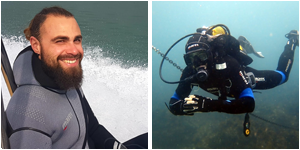
Colabora en actividades náuticas, apoyo técnico y acompañamiento de experiencias submarinas.